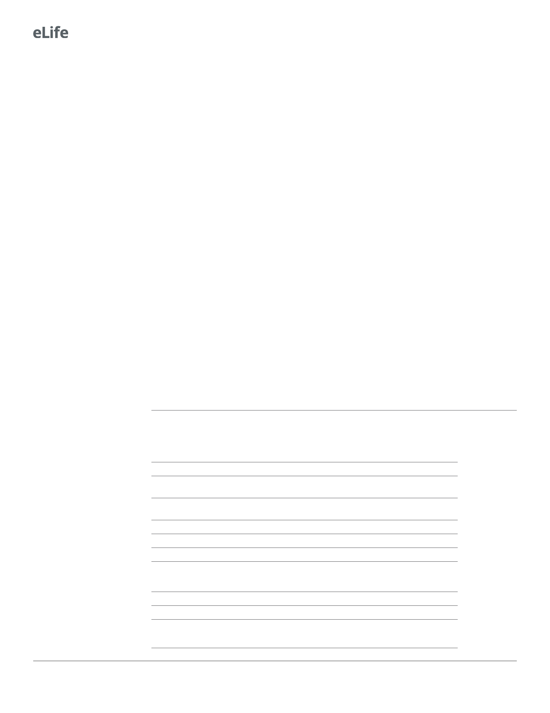

Research article
Microbiology and Infectious Disease
to be statistically significant. Determination of statistically significant differences was only possible
for proteins that appeared in all four conditions.
b-galactosidase assay
Samples for b-galactosidase assays were prepared as follows. Cultures of V. cholerae co969 WT or
V. cholerae co969 DbipA carrying pCB192N derivatives with promoter-lacZ translational fusions were
started from a 1:100 dilution of an o/n culture and grown to exponential phase.
Two microliter drops were then plated on LB agar plates (10 g/l NaCl) + Cb (100 mg/ml) and incu-
bated for an appropriate time at either 37˚C or 22˚C (under those conditions, the number of
CFUs per colony was similar for both temperatures). For each sample, three to four colonies were
collected and resuspended in buffer Z (60 mM Na2HPO4.7H2O, 40 mM NaH2PO4.H2O, 10 mM KCl,
1 mM MgSO4, 50 mM b-mercaptoethanol, pH 7.0). b-galactosidase assays were performed as
described previously (Miller, 1972). Miller units were calculated from two independent experiments
containing three biological replicates each (each replicate containing four colonies).
Statistical analyses
The program GraphPad PRISM Software (Inc, San Diego, CA, http://www.graphpad.com) has been
used for all statistical analyses. To determine the significance of the data, the t-test (unpaired) has
been performed. p<0.05 has been considered significant.
Acknowledgements
We thank Alonso R Serrano for assistance with RNA-seq data. We thank all the members of the
Cava lab for helpful discussions. We thank Jo¨ rgen A˚ de´ n for assistance with CD experiments. Proteo-
mics were performed by Ana Velic, Nicolas Nalpas, and Boris Mazek at the University of Tu¨ bingen
(Germany). Research in the Cava lab is supported by The Swedish Research Council (VR), The Knut
and Alice Wallenberg Foundation (KAW), The Laboratory of Molecular Infection Medicine Sweden
(MIMS), and The Kempe Foundation. TdP was the recipient of an EMBO short-term fellowship
(EMBO ASTF 1–2015). Research in the Waldor lab is supported by NIH grant RO1AI-042347 and
HHMI. BS was supported by the Natural Sciences and Engineering Council of Canada (PGSD3-
487259-2016). ARW was funded by grant T32 AI-132120. The work from the Fredrick lab was sup-
ported by NIH grant R01 GM072528.
Additional information
Funding
Funder
Swedish Research Council
Knut och Alice Wallenbergs
Stiftelse
The Laboratory of Molecular
Infection Medicine Sweden
The Kempe Foundation
EMBO
National Institutes of Health
Natural Sciences and Engi-
neering Research Council of
Canada
National Institutes of Health
National Institutes of Health
Grant reference number
EMBO ASTF 1-2015
RO1AI-042347
PGSD3-487259-2016
T32 AI-132120
R01 GM072528
Author
Felipe Cava
Felipe Cava
Felipe Cava
Felipe Cava
Teresa del Peso Santos
Matthew K Waldor
Brandon Sit
Alyson R Warr
Kurt Fredrick
The funders had no role in study design, data collection and interpretation, or the
decision to submit the work for publication.
18 of 23